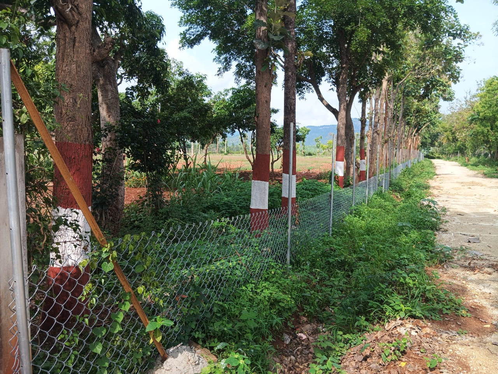
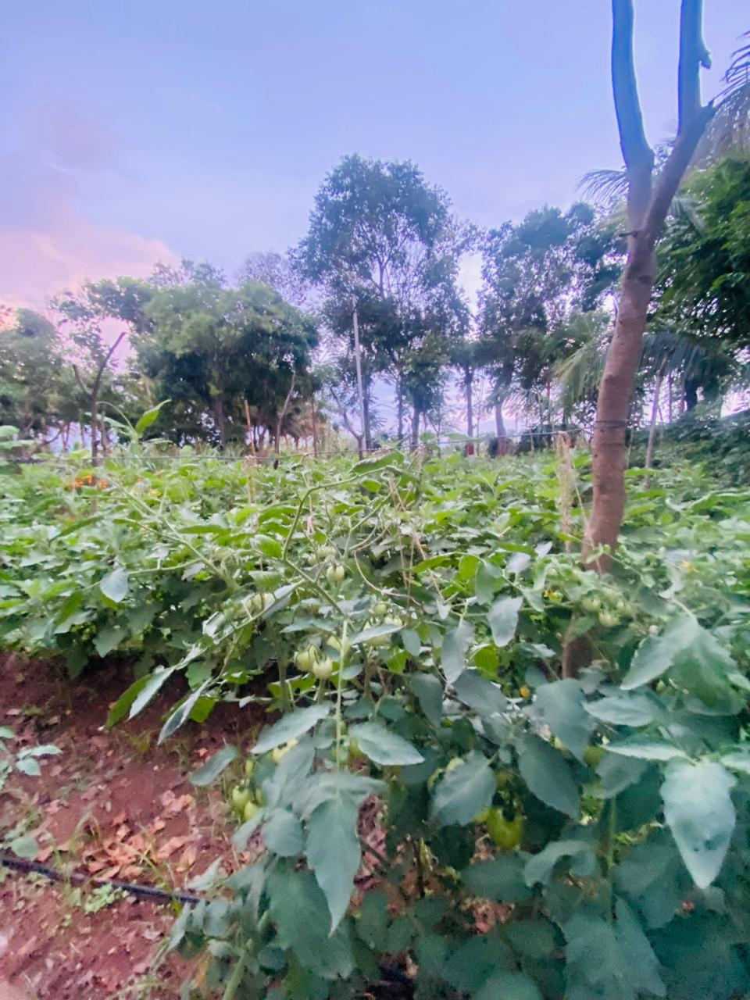
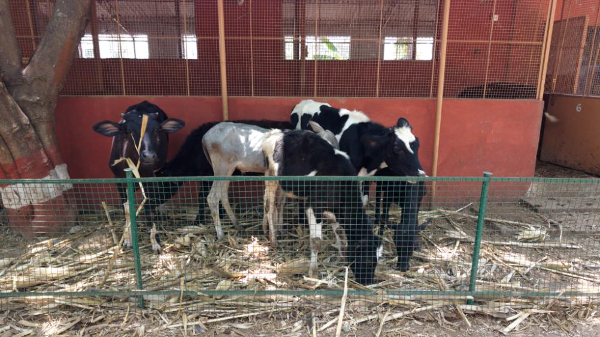
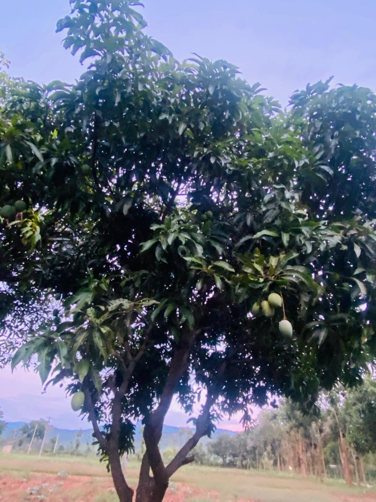

Get
Started Now

120 acres of fully managed farmland in Yelandur, Karnataka - own sandalwood,
fruit trees and livestock, from plantation to harvest.
Managed Farmland In Yelandur
Per Managed Farm Plot
Sandalwood & Fruit, Per Plot
To Sandalwood Harvest Maturity
Krushi Bhoomi Farms is a one-of-a-kind managed farmland project spread across 120 acres of lush greenery in Yelandur, Karnataka. Each 6,500 sq.ft. plot is thoughtfully designed with 40 to 50 sandalwood and fruit-bearing trees for long-term, high-value returns. Every plot owner can also keep a cow and sheep on the farm - generating regular income and a deeper connection with nature. We're not just selling land, we're helping you create a legacy.





Your investment is more than a financial decision - it's about creating a sustainable future and building a legacy that blends nature with prosperity.
Sandalwood plantations, fruit-bearing trees, indigenous cattle and poultry combine into one self-sustaining ecosystem.

Milk from your own cows and regular fruit harvests provide a steady, daily return alongside long-term tree value.

Our team handles plantation, maintenance and livestock care - backed by clear land titles and full documentation.
Eco-friendly farming techniques protect soil health and biodiversity for a greener future.

As the trees mature and the ecosystem thrives, your investment's value grows - a legacy you can pass down through generations.
Reconnect with nature at your own farm - a peaceful retreat away from the urban hustle, whenever you like.
As someone with no farming background, I was hesitant at first. But the management model at Krushi Bhoomi Farms is flawless. The team takes care of everything while I enjoy the returns.
I have a wide and diverse investment portfolio, ranging from real estate, metal to equities. But my investment in Krushi Bhoomi Farms stands out as the most meaningful and rewarding. Watching my land flourish with trees, animals, and daily income has been deeply fulfilling.
After retiring from the Indian Air Force, I was searching for something meaningful, a new mission, a deeper purpose. Owning a plot at Krushi Bhoomi Farms gave me exactly that. It feels like I'm still serving - this time, by nurturing the earth.
I've always loved nature but never thought it could be a profitable venture. Krushi Bhoomi made it possible. Now I'm earning and doing what I love.
Bringing my kids to our farm has been a joy. They've learned about trees, animals, and sustainable living - something no school can fully teach.
Most real estate is just about buildings. This is about land, life, and legacy. I sleep better knowing I've invested in something that grows with time. Thanks to Krushi Bhoomi Farms for making our dream possible.
After years of building a career and life in the Middle East, retirement left me yearning for something deeper. Owning a plot at Krushi Bhoomi Farms reconnects me with nature and the rich heritage of my roots - a soulful journey back to what truly matters.